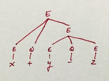
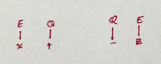
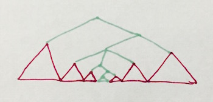
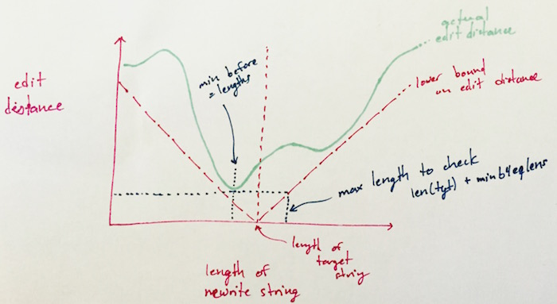

posted by Beka on 14 Apr 2015
One of the main benefits of LTSG parsing was that it could narrow the parsing problem by guiding the parse, establishing subgoals, making the problem nice and recursive. The main drawback, however, was that no work would be done if the head of a phrase (including the whole sentence) was missing. On the other hand, Unger parsing could parse in a recursive goal-directed way regardless of missing words, but was unguided by head information, and has poor parse times due to non-determinism.
If we could somehow have the benefits of these approaches, without the drawbacks, we might have a shot at a good error correcting parser. One option that could be useful is to parse bottom up with a chart parser, to produce as much partial parse information as possible, and then work in a top-down fashion to find and correct the errors. This can be done somewhat efficiently, using because most of the parse is already there.
A Property of Malformed Input
Consider, for instance, the following parse tree from a simple math expression grammar (which I'll omit because it's obvious enough):

If the symbol y is omitted, this will fail to parse. But with a bottom-up parser, we can partially parse it to produce the following partial trees:

You'll notice that the missing nodes are the ones that were above the missing y, namely, these in green:

This observation is true in general: the elements causing the error will block a node in the tree from forming, and the node above that, and so on. This leaves most of the tree parsed, except a thread of missing nodes, and allows a top-down algorithm to quickly find partial matches.

Rewriting and Editing
The heart of the method we will use, now, is a somewhat simple enumeration-based search. In a top down fashion, we can generate trees, and test their yields (sequences of leaf symbols) against the partial parse to see how well they match. The trees with the best match are the possible corrections.
Consider again the target string x+-z from above. The best partial parse we can get for this is EQQE as shown. Working top down from the symbol E, we can produce a number of parse trees, with various yields. Each of these yields has a certain edit distance from EQQE.
tree | yield | dist tree | yield | dist
--------------------|---------|------ --------------------|---------|------
| | | |
E | E | 3 E | |
| | / | \ | |
--------------------|---------|------ E Q E | |
| | / | \ | EQEQEQE | 3
E | | E Q E | |
/ | \ | EQE | 1 / | \ | |
E Q E | | E Q E | |
| | | |
--------------------|---------|------ --------------------|---------|------
| | | |
E | | E | |
/ | \ | | / | \ | |
E Q E | EQEQE | 1 E Q E | EQEQEQE | 3
/ | \ | | / | \ / | \ | |
E Q E | | E Q E E Q E | |
| | | |
--------------------|---------|------ --------------------|---------|------
| | | |
E | | E | |
/ | \ | | / | \ | |
E Q E | EQEQE | 1 E Q E | |
/ | \ | | / | \ | EQEQEQE | 3
E Q E | | E Q E | |
| | / | \ | |
--------------------|---------|------ E Q E | |
| | | |
E | | --------------------|---------|------
/ | \ | | | |
E Q E | | E | |
/ | \ | EQEQEQE | 3 / | \ | |
E Q E | | E Q E | |
/ | \ | | / | \ | EQEQEQE | 3
E Q E | | E Q E | |
| | / | \ | |
--------------------|---------|------ E Q E | |
| |
--------------------|---------|------There are plenty more possible trees, but we'll stop here, since this suffices to demonstrate the point. As you can see, some of these parse trees have a yield with edit distance 1, so it would take only a single edit to the target string EQQE to make it parse into one of these trees, while the rest have 3. If we listed other trees derivable from these, they would have even larger edit distances. So for this input, at least, we'd like to pick the three trees with edit distance 1 as candidates for correction.
Because there's an infinite number of such trees we could try, we need a way to cut the search short. We'd like to find the trees with the lowest edit distance, with as little search as possible. Conveniently, we can take advantage of a property of edit distance to guide us.
For any given target string T, with length len(T), any other string S with length len(S) will have an edit distance bounded on the bottom by |len(T) - len(S)|. If S is shorter than T, we need to delete from T at least the difference, and we might need to also do some substitutions. Conversely, if S is longer, we'd need to add to T at least the difference, and we might need to also do some substitutions. So when no substitutions are required, we at minimum need to add or drop the difference.
Now, for all of the trees with yields of length less than or equal to len(T) of the target string, there will be some M with a minimum edit distance D. Trees with yields of lengths greater than len(T) + D will necessarily have a minimum edit distance greater than D by the above property, so we know without even looking at them that they won't be minimal. In general, we also never need to check trees with yields more than twice the length of the target, because there will always be a shorter edit: delete all but one character and substitution (if necessary). This edit will have distance len(T).
This now gives us an algorithm: enumerate all the trees with yield less than or equal to len(T), and find the minimum edit distance D, then also enumerate all the trees with yield lengths up to and including len(T) + D. The trees in this range with minimal edit distance are the best possible corrections to the malformed input.

For the above example of EQQE, we find that there's only two trees with yield length less than or equal to 4, the length of EQQE, and of those, the lowest edit distance is 1. So we can enumerate further trees up to yield length 5. Any tree with yield length 6 or higher, starting with all the ones with yield EQEQEQE, can be ignored. We can stop rewriting once we hit those, and short circuit the enumeration. This leaves only 4 trees to look at, 3 of which have minimal edit distance.
tree | yield | dist
--------------------|---------|------
| |
E | E | 3
| |
--------------------|---------|------
| |
E | |
/ | \ | EQE | 1
E Q E | |
| |
--------------------|---------|------
| |
E | |
/ | \ | |
E Q E | EQEQE | 1
/ | \ | |
E Q E | |
| |
--------------------|---------|------
| |
E | |
/ | \ | |
E Q E | EQEQE | 1
/ | \ | |
E Q E | |
| |
--------------------|---------|------Discussion
This gives us a very efficient way of finding corrections to the parse tree, and only works well because we can take advantage of the bottom up information. Even if the malformed input had been longer, such as x+y-z*w/q+-s, there would still be a partial parse with the form EQQE. If we tried instead to fully parse top down in this fashion, we would have to go through a lot more parses. I don't know if that would have better or worse complexity, but I would expect worse.
One disadvantage you may have noticed is that a bottom-up chart parse will produce many partial parses, not just one, even if we look at the longest partial parses. We can run this process for each. We might also want to search longer partial parses, in case other alternative parses of equally minimal edit distance can be found there. In the case of x+y-*z, for instance, the longest partial parses will treat x+y as an E, again giving the partial parse string EQQE, but there are other minimal correction parses that don't, such as one that treats x-*z as an E with an extra operator stuck in. This additional search of other, longer partial parses might be undesirable, however, as it will recapitulate the shorter partial parses, and would require some way to decide when to stop.
An extremely good property of this algorithm is that the enumerated trees don't depend on the target string. This means we can precompute trees and their yields up to some sufficiently large size, index them by their yields, etc. and for the most frequent malformed inputs, we never need to actually enumerate trees on the fly. We can even precompute a number of possible partial parses (or even all of them, up to some length, tho this is generally infeasible), and thereby completely bypass online computation, replacing it instead with lookup, at the cost of storing all of this data. However, once it's all stored, you can now do statistics over it really easily
Lastly, this error correction process is in some sense global. That is, it finds the best correction(s) based on the entirety of the input, and the solution is not a tree with error nodes as I previously suggested we wanted. Instead, it's a pairing of the partial parse input with the candidate repairs. Machine learning techniques can still be performed on this, however it's going to be different than the error-node variety.
If you have comments or questions, get it touch. I'm @psygnisfive on Twitter, augur on freenode (in #languagengine and #haskell).